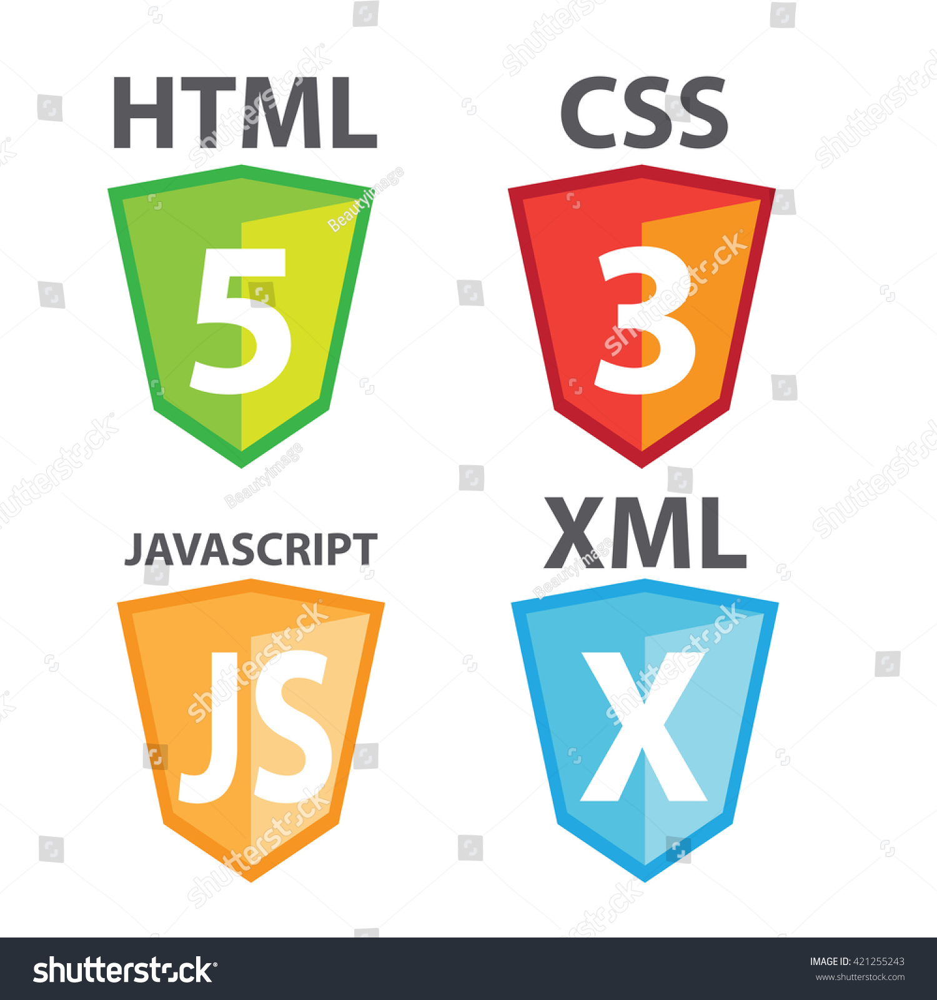

UNIR FP
Tu mejor elección
QUIÉNES SOMOS
| Horas | Lunes | Martes | Miércoles | Jueves | Viernes |
|---|---|---|---|---|---|
| 10:30 12:00 |
Formación y Orientación Laboral |

Lenguaje de Marcas |
Base de Datos |
Sistemas Operativos |
Base de Datos |
| 12:00 13:30 |
Planificación y Administración de redes |
Planificación y Administración de redes |
|||
| 16:00 17:30 |
Base de datos |
Planificación y Administración de redes |
Formación y orientación laboral |
Lenguaje de Marcas |
Planificación y Administración de redes |
| 18:00 19:30 |
Lenguaje de Marcas |
Formación y Orientación Laboral |
|||
| 20:00 21:30 |
Sistemas Operativos |
Sistemas Operativos |
Lenguaje de Marcas |
TITULACIONES
PROFESORADO
HORARIOS
DÓNDE ESTAMOS